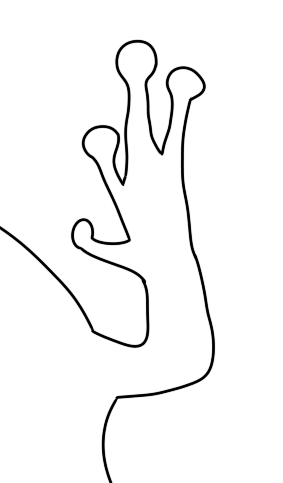
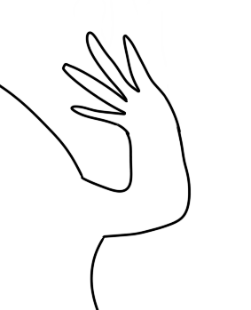

  <a href="#Hauptinhalt" class="skip-link" tabindex="0" aria-label="Springe direkt zum Hauptinhalt">Zum Hauptinhalt springen</a><!DOCTYPE html>
<html lang="de"> 
<head>
	<meta charset="utf-8">
	<meta name="viewport" content="width=device-width, initial-scale=1">
	<meta name="generator" content="RocketCake">
	<title>Bestimmungschritt 4.1 visuell</title>
	<link rel="stylesheet" type="text/css" href="../visuell/v41_html.css?h=1ed361df">
</head>
<body>
<div class="textstyle1">
<div id="container_27239954"role="banner"><div id="container_27239954_padding" ><div class="textstyle1"><span class="textstyle2"><br/></span><span class="textstyle3">Darstellungsoptionen:</span><span class="textstyle2"><br/></span><style>

 .options-label {
        color: white;
        font-family: Arial, sans-serif;
        margin-bottom: 5px; /* Kleineren Abstand zu den Buttons */
    }

 </style>

<div class="text-resize-controls">

    <button onclick="changeFontSize(1)" aria-label="Seitenzoom auf 100% setzen">100%</button>
    <button onclick="changeFontSize(1.5)" aria-label="Seitenzoom auf 150% setzen">150%</button>
    <button onclick="changeFontSize(2)" aria-label="Seitenzoom auf 200% setzen">200%</button>
    <button onclick="toggleInvertColors()" aria-label="Farben der Webseite umkehren">Farben umkehren</button>
</div>
<script>
    function applySettings() {
        const savedFontSize = localStorage.getItem("fontSize");
        if (savedFontSize) {
            document.documentElement.style.transform = "scale(" + savedFontSize + ")";
            document.documentElement.style.transformOrigin = "top left";
        }
        
        const savedInverted = localStorage.getItem("invertedColors");
        if (savedInverted === "true") {
            document.documentElement.classList.add("inverted-colors");
        }
    }

    function changeFontSize(scale) {
        localStorage.setItem("fontSize", scale);
        applySettings();
    }
    
    function toggleInvertColors() {
        const isInverted = document.documentElement.classList.toggle("inverted-colors");
        localStorage.setItem("invertedColors", isInverted);
    }
    
    document.addEventListener("DOMContentLoaded", applySettings);
</script>

<style>
    .inverted-colors {
        filter: invert(1) hue-rotate(180deg);
        background-color: black;
    }
    .inverted-colors img {
        filter: invert(1) hue-rotate(180deg);
    }
</style><span class="textstyle3"><br/>Bitte verwenden Sie zur Anpassung der Schriftgr&#246;&#223;e idealerweise die Zoom-Funktion des Browsers, damit sich die Seite automatisch anpasst. </span></div>
<div style="clear:both"></div></div></div><div id="container_1f0f9a1a"role="banner" aria-label="Seitentitel"><div id="container_1f0f9a1a_padding" ><div class="textstyle1"><span class="textstyle4">InkluLurch</span><span class="textstyle4"><br/></span><span class="textstyle5">Inklusive digitale Bestimmungshilfe f&#252;r Amphibien in Baden-W&#252;rttemberg</span></div>
</div></div><nav id="elem_27fb936f"  style="vertical-align: top; position:relative; display: inline-block; width:100%; height:37px; min-width:350px; background:none; " >  <div id="text_60f75242">
    <div class="textstyle1">
<div id="menu" role="menu"><div  class="menuholder1"><a href="javascript:void(0);" tabindex="-1">
	<div id="menuentry_5bd6a16c"  class="menustyle1 menu_mainMenuEntry mobileEntry">
		<div class="menuentry_text1">
      <span class="textstyle6">&#8801;</span>
		</div>
	</div>
</a>
<a href="../index.html" style="text-decoration:none" tabindex="-1">
	<div id="menuentry_3d605f38"  class="menustyle2 menu_mainMenuEntry normalEntry">
		<div class="menuentry_text2">
      <span class="textstyle7">Startseite</span>
		</div>
	</div>
</a>
<a href="../bestimmungshilfen.html" style="text-decoration:none" tabindex="-1">
	<div id="menuentry_7a4c4888"  class="menustyle3 menu_mainMenuEntry normalEntry">
		<div class="menuentry_text2">
      <span class="textstyle7">Bestimmungshilfen</span>
		</div>
	</div>
</a>
<a href="../amphibienrufe.html" style="text-decoration:none" tabindex="-1">
	<div id="menuentry_71507bc1"  class="menustyle4 menu_mainMenuEntry normalEntry">
		<div class="menuentry_text2">
      <span class="textstyle7">Amphibienrufe</span>
		</div>
	</div>
</a>
<a href="../amphibienportraets.html" style="text-decoration:none" tabindex="-1">
	<div id="menuentry_2ca33937"  class="menustyle5 menu_mainMenuEntry normalEntry">
		<div class="menuentry_text2">
      <span class="textstyle7">Amphibienportr&#228;ts</span>
		</div>
	</div>
</a>
<a href="../downloads.html" style="text-decoration:none" tabindex="-1">
	<div id="menuentry_1f6410d5"  class="menustyle6 menu_mainMenuEntry normalEntry">
		<div class="menuentry_text2">
      <span class="textstyle7">Downloads</span>
		</div>
	</div>
</a>
<a href="../ueber.html" style="text-decoration:none" tabindex="-1">
	<div id="menuentry_77b4141d"  class="menustyle7 menu_mainMenuEntry normalEntry">
		<div class="menuentry_text2">
      <span class="textstyle7">&#220;ber das Projekt</span>
		</div>
	</div>
</a>
<a href="../impressum.html" style="text-decoration:none" tabindex="-1">
	<div id="menuentry_8f3bd7b"  class="menustyle8 menu_mainMenuEntry normalEntry">
		<div class="menuentry_text2">
      <span class="textstyle7">Impressum</span>
		</div>
	</div>
</a>
<a href="../sitemap.html" style="text-decoration:none" tabindex="-1">
	<div id="menuentry_5bdb9219"  class="menustyle9 menu_mainMenuEntry normalEntry">
		<div class="menuentry_text2">
      <span class="textstyle7">Sitemap</span>
		</div>
	</div>
</a>

	<script type="text/javascript" src="../rc_images/wsp_menu.js"></script>
	<script type="text/javascript">
		var js_menu= new wsp_menu('menu', 'menu', 10, null, true, {generateAriaLabels: false, setUsefulTabIndices: false, closeWhenMouseOut: false} );

		js_menu.createMenuForItem('menuentry_5bd6a16c', ["      <span class=\"textstyle7\">Startseite</span> ", '../index.html', '',
		                                   "      <span class=\"textstyle7\">Bestimmungshilfen</span> ", '../bestimmungshilfen.html', '',
		                                   "      <span class=\"textstyle7\">Amphibienrufe</span> ", '../amphibienrufe.html', '',
		                                   "      <span class=\"textstyle7\">Amphibienportr&#228;ts</span> ", '../amphibienportraets.html', '',
		                                   "      <span class=\"textstyle7\">Downloads</span> ", '../downloads.html', '',
		                                   "      <span class=\"textstyle7\">&#220;ber das Projekt</span> ", '../ueber.html', '',
		                                   "      <span class=\"textstyle7\">Impressum</span> ", '../impressum.html', '',
		                                   "      <span class=\"textstyle7\">Sitemap</span> ", '../sitemap.html', '']
		                                   , true);
		js_menu.createMenuForItem('menuentry_3d605f38', []);
		js_menu.createMenuForItem('menuentry_7a4c4888', []);
		js_menu.createMenuForItem('menuentry_71507bc1', []);
		js_menu.createMenuForItem('menuentry_2ca33937', []);
		js_menu.createMenuForItem('menuentry_1f6410d5', []);
		js_menu.createMenuForItem('menuentry_77b4141d', []);
		js_menu.createMenuForItem('menuentry_8f3bd7b', []);
		js_menu.createMenuForItem('menuentry_5bdb9219', []);

	</script>
</div></div>      </div>
    </div>
</nav><div id="Hauptinhalt" role="region" aria-label="Seiteninhalt"
><div id="Hauptinhalt_padding" ><div class="textstyle1"><div  id="placeh_17435cc4" >
  <div class="textstyle1">
<head> 
   <style>
        body {
            font-family: Arial, sans-serif;
        }
             .hidden {
            display: none;
        }
    </style>
</head>
<body>
    <button id="toggle-button">Text in Einfacher Sprache anzeigen</button>
</body><div id="container-standardsprache"><div id="container-standardsprache_padding" ><div class="textstyle1"><div id="container_21f0fe30"><div id="container_21f0fe30_padding" ><div class="textstyle1">    <span class="textstyle2">Hat das Tier ...</span>
</div>
</div></div><div id="container_3fc62e68"><div id="container_3fc62e68_padding" ><div class="textstyle1"><div id="container_19d572c2"><div id="container_19d572c2_padding" ><div class="textstyle1"><span class="textstyle2">... runde Haftscheiben an den Zehen?<br/><br/></span><a href="../artenportraets_v/europaeischerlaubfrosch_v.html" style="text-decoration:none"><div id="button_1349acb3" role="button" aria-label="Zum Artportr&#228;t des Europ&#228;ischen Laubfroschs gehen"
><div class="vcenterstyle1"><div class="vcenterstyle2"><div class="textstyle8">    <span class="textstyle2">Europ&#228;ischer Laubfrosch</span>
</div>
<div class="textstyle1"></div>
</div></div></div></a><span class="textstyle2"><br/><br/></span></div>
<div style="clear:both"></div></div></div><div id="container_2e8ef040"><div id="container_2e8ef040_padding" ><div class="textstyle1"><span class="textstyle2">... eher schlanke Zehen?<br/><br/></span><a href="v51.html" style="text-decoration:none"><div id="button_2557641d" role="button" aria-label="Bei Echten Fr&#246;schen weitermachen"><div class="vcenterstyle1"><div class="vcenterstyle2"><div class="textstyle8">    <span class="textstyle2">Echte Fr&#246;sche</span>
</div>
<div class="textstyle1"></div>
</div></div></div></a><span class="textstyle2"><br/><br/></span></div>
<div style="clear:both"></div></div></div></div>
<div style="clear:both"></div></div></div><a href="v31.html" title="zur&#252;ck zur letzten Seite" arial-label="zur&#252;ck zur letzten Seite" style="text-decoration:none"><div id="button_6a068867" role="button"
><div class="vcenterstyle1"><div class="vcenterstyle2"><div class="textstyle8">    <span class="textstyle2">zur&#252;ck</span>
</div>
<div class="textstyle1"></div>
</div></div></div></a></div>
<div style="clear:both"></div></div></div><div id="container-einfache-sprache" class="hidden"><div id="container-einfache-sprache_padding" ><div class="textstyle1"><div id="container_5ee50428"><div id="container_5ee50428_padding" ><div class="textstyle1"><div id="container_3836df8c"><div id="container_3836df8c_padding" ><div class="textstyle1"><span class="textstyle2">Das Tier hat runde, dicke Zehen.<br/><br/></span><a href="../artenportraets_v/europaeischerlaubfrosch_v.html" style="text-decoration:none"><div id="button_1e54ae82" role="button" aria-label="Zum Artportr&#228;t des Europ&#228;ischen Laubfroschs gehen"><div class="vcenterstyle1"><div class="vcenterstyle2"><div class="textstyle8">    <span class="textstyle2">Europ&#228;ischer Laubfrosch</span>
</div>
<div class="textstyle1"></div>
</div></div></div></a><span class="textstyle2"><br/><br/></span></div>
<div style="clear:both"></div></div></div><div id="container_577ddf51"><div id="container_577ddf51_padding" ><div class="textstyle1"><span class="textstyle2">Das Tier hat d&#252;nne Zehen.<br/><br/></span><a href="v51.html" style="text-decoration:none"><div id="button_2941ec41" role="button" aria-label="Bei Echten Fr&#246;schen weitermachen"
><div class="vcenterstyle1"><div class="vcenterstyle2"><div class="textstyle8">    <span class="textstyle2">Echte Fr&#246;sche</span>
</div>
<div class="textstyle1"></div>
</div></div></div></a><span class="textstyle2"><br/><br/></span></div>
<div style="clear:both"></div></div></div></div>
<div style="clear:both"></div></div></div><a href="v31.html" title="zur&#252;ck zur letzten Seite" arial-label="zur&#252;ck zur letzten Seite" style="text-decoration:none"><div id="button_3fb58021" role="button"><div class="vcenterstyle1"><div class="vcenterstyle2"><div class="textstyle8">    <span class="textstyle2">zur&#252;ck</span>
</div>
<div class="textstyle1"></div>
</div></div></div></a></div>
<div style="clear:both"></div></div></div>
    <script>
        (function () {
            var button = document.getElementById("toggle-button");
            var standardContainer = document.getElementById("container-standardsprache");
            var einfacheSpracheContainer = document.getElementById("container-einfache-sprache");

            button.addEventListener("click", function () {
                if (standardContainer.className.indexOf("hidden") !== -1) {
                    standardContainer.className = standardContainer.className.replace("hidden", "").trim();
                    einfacheSpracheContainer.className += " hidden";
                    button.innerHTML = "Text in Einfacher Sprache anzeigen";
                } else {
                    standardContainer.className += " hidden";
                    einfacheSpracheContainer.className = einfacheSpracheContainer.className.replace("hidden", "").trim();
                    button.innerHTML = "Text in Standardsprache anzeigen";
                }
            });
        })();
    </script>
    </div>
</div>
</div>
<div style="clear:both"></div></div></div><div id="container_b131709"role="contentinfo" aria-label="Copyright Information"><div id="container_b131709_padding" ><div class="textstyle1">  <span class="textstyle9">Copyright (c) by Josephine R&#246;hner</span>
</div>
</div></div>  </div>
</body>
</html>